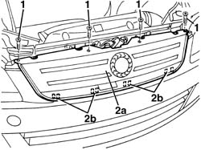

7055A43 CENTRAL FRONT GRILLE - R R
- Path
- Procedures > 70 FITTINGS > 7055 MOULDINGS ON PROTECTIONS > 7055A EXTERIOR MOULDINGS > 7055A43 CENTRAL FRONT GRILLE - R R
- Kind
- repair procedure (removal / refitting; the operation number is the code)
- Applies to
- all engines; all production periods
- Interactive page
- https://sloeber94.github.io/elrnDB-fMltpl/en/#/186003570
Applies to: all engines; production: da 06/04
 Removing
Removing
 Refitting
Refitting- Open the bonnet.
- Undo the bolts fixing the front grille.
- Remove the frong grille (2a) releasing the lower retainers (2b).

Applies to: all engines; production: da 06/04
Refitting
Removing- Check that the grille is not damaged and check the condition of the lower retainers.
- Position the grille attaching the retainers.
- Tighten the upper bolts.